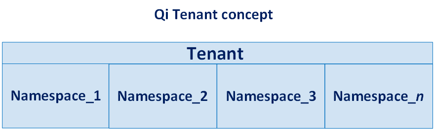

Introducing the Sequential Data Store
The Sequential Data Store (SDS) is a highly flexible cloud-based sequential data store that you use to store, retrieve, and analyze data. You create and write data to streams using a simple REST (REpresentational State Transfer) API (Application Programming Interface). The streams you create can be used to store simple or complex data types to suit your application needs. You can define simple or complex indexing to arrange and relate your data. An assortment of methods with customizable behaviors are available to read data and easily obtain needed information.
Access to SDS
You must acquire a Tenant, security credentials, and a Namespace before interacting with the Data Store. If you do not have a Tenant, you can request access to the SDS Preview at OSIsoft Cloud Services.
The SDS Preview program is limited; contacting OSIsoft does not assure participation.
If you are selected to participate in the preview, you will receive an email notifying you of the name of your Tenant. Use the credentials you were provided to sign into the portal. Signing in grants you access to additional functionality.
Samples
The best way to get started with SDS is to run one or more of the code samples. Code samples are provided in a number of different programming languages to illustrate how to easily and effectively interact with SDS. The code samples can be found in the SDS-Samples repository on GitHub. Obtain SDS REST API access keys from https://cloud.osisoft.com before running the sample code.
Each sample includes a readme file which describes the steps required to run the sample and a brief description that highlights some of the sample’s functionality. Be sure to read the readme file to understand how the sample works.
After you have finished this introduction and worked with one of the samples, refer to the Quick start section, which describes the interaction of various SDS objects and helps you get started with your own application.
Architecture
A Tenant represents a client or organization that owns and manages a collection of OSIsoft Cloud Services, including the Sequential Data Store.
Tenants are divided into one or more logical units called Namespaces. Each Namespace is distinct and separate from other Namespaces, with its own instances of the various OSIsoft Cloud Services and data stores. Namespaces provide isolation of resources.
Isolation provided by Tenants and Namespaces prevent accidental or malicious data access.

Getting help
The following email address is available to participants of the SDS Preview for both product support and feedback:
The OSIsoft team will respond to all support requests as quickly as possible during business hours (Pacific Time).